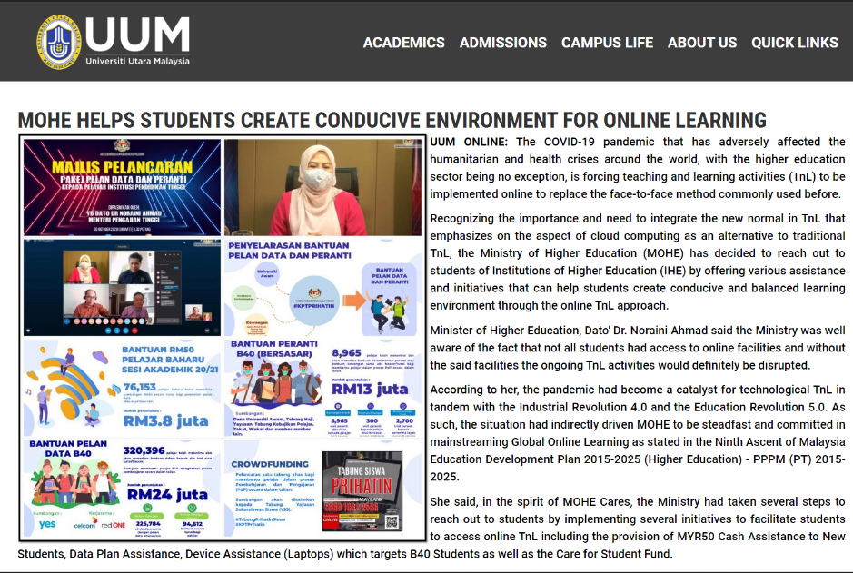

Since UUM is a government university, a number of subsidies are available to assist students with financial difficulties.
Accommodation and transportation costs have been deducted in full from student fees. Many families have been harmed by the Covid-19 outbreak as a result of our country's poor economy.
To participate in online courses, students are required to have at least one electronic device as a result of the shift from on-campus to online education.
Students' financial burdens are alleviated by the reduction of student fees during this epidemic.
Compared to other private universities, students are appreciative that UUM continues to prioritise students.
